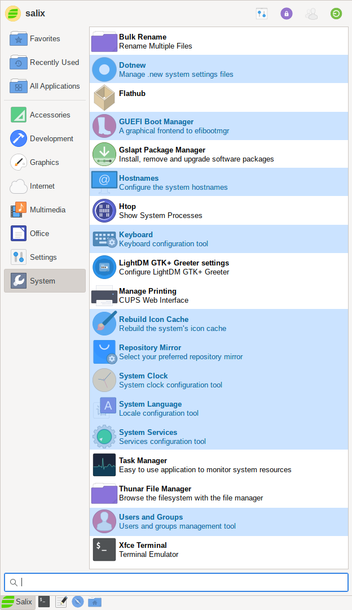

Salix tools are a collection of utilities that are designed to manage every aspect of Salix configuration easily. You can find these tools under the System section of the application menu. Of course, system management in Salix can also be done the usual ( manual) Slackware way.

Please note that most Salix tools have an ncurses counterpart which can be used in a Linux terminal or console.